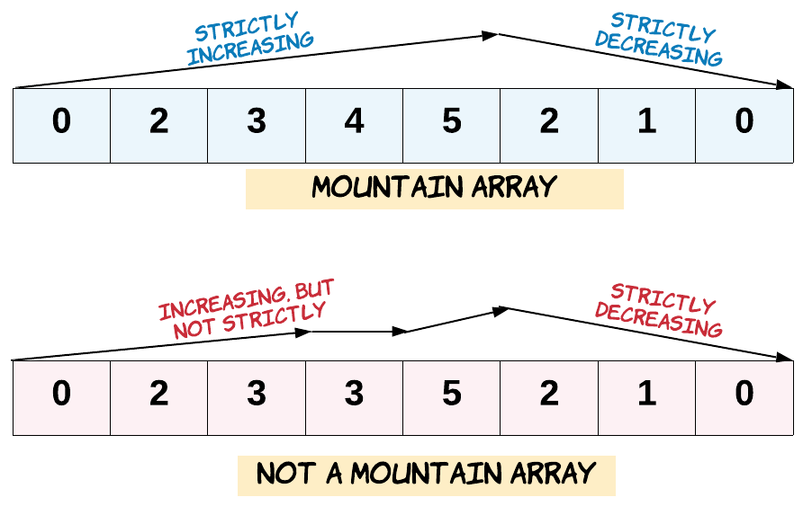

941. 有效的山脉数组
双指针从两端爬向山顶：i 只上坡、j 只下坡，两指针在中间同一点相遇才是山脉数组。
思路
i从左往右：arr[i] < arr[i+1]才走，停在第一个不下坡处；j对称地从右往左。- 合法 ⟺
i == j且山顶不在两端（i > 0 && j < n-1）。 - 纯递增/纯递减时指针停在端点，被第三条挡住；出现平台（相等）时两指针到不了同一点。
图解
最优解
1class Solution {2 public boolean validMountainArray(int[] arr) {3 int n = arr.length;4 if (n < 3) return false;5 int i = 0, j = n - 1;6 // i 从左往右只走上坡，停在第一个不下坡的位置7 while (i + 1 < n && arr[i] < arr[i + 1]) i++;8 // j 从右往左只走下坡，停在第一个不上坡的位置9 while (j > 0 && arr[j - 1] > arr[j]) j--;10 // 山顶不能在两端，且两指针必须在中间同一点相遇11 return i > 0 && i == j && j < n - 1;12 }13}题目
给定一个整数数组 arr，如果它是有效的山脉数组就返回 true，否则返回 false。
让我们回顾一下，如果 arr 满足下述条件，那么它是一个山脉数组：
arr.length >= 3- 在
0 < i < arr.length - 1条件下，存在i使得：arr[0] < arr[1] < ... arr[i-1] < arr[i]arr[i] > arr[i+1] > ... > arr[arr.length - 1]

示例 1：
输入：arr = [2,1] 输出：false
示例 2：
输入：arr = [3,5,5] 输出：false
示例 3：
输入：arr = [0,3,2,1] 输出：true
提示：
1 <= arr.length <= 1040 <= arr[i] <= 104
题面取自力扣当前版本。
数据快照 2026-11-04。题面版权归力扣所有，本站点仅供本人学习使用，请勿对外发布。